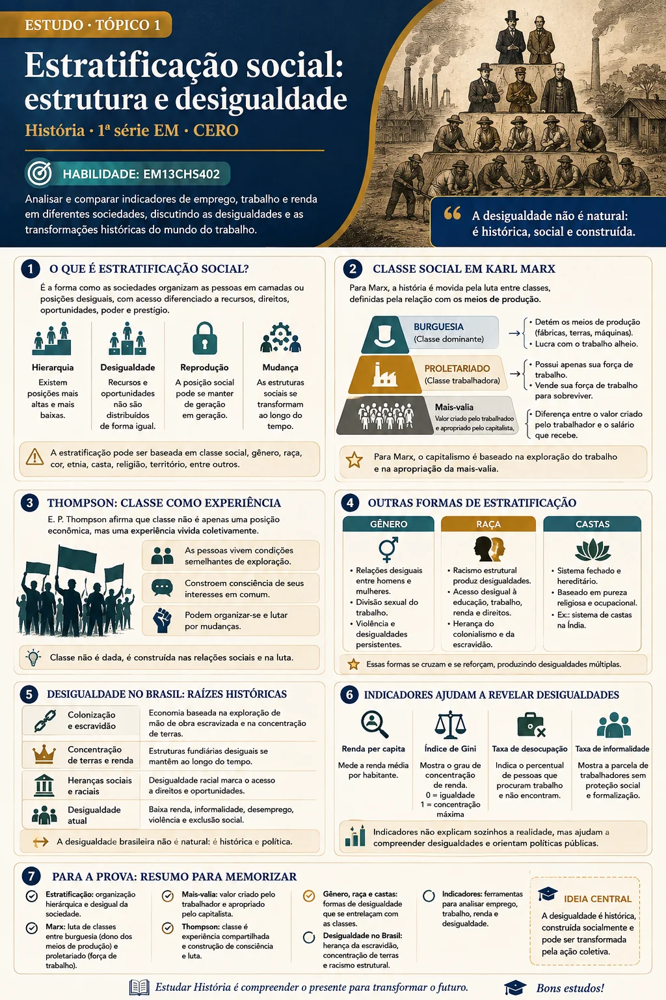

Tópico 1 de 9
Estratificação social
Como a desigualdade se organiza: classe, gênero, raça e outras formas de separar as pessoas em camadas.
Objetivos de aprendizagem
- Explicar o que é estratificação social e por que ela existe em todas as sociedades.
- Diferenciar os critérios que organizam a desigualdade: classe, gênero, raça e nascimento.
- Compreender o conceito de classe social em Marx e a ideia de experiência de classe em Thompson.
- Reconhecer a desigualdade brasileira como resultado de processos históricos.
- Identificar como teorias raciais do século XIX sustentaram a desigualdade.
Em qualquer sociedade que você conheça, as pessoas não têm as mesmas condições de vida. Umas moram melhor, estudam mais, ganham mais e são mais respeitadas do que outras. Isso não acontece por acaso: acontece porque as sociedades organizam essa diferença. Esse processo recebe o nome de estratificação social.
Classe social: o critério das sociedades capitalistas
Nas sociedades capitalistas, o conceito central para entender a estratificação é o de classe social. Karl Marx (1818-1883) e Friedrich Engels (1820-1895) responderam que o que define a classe é a posição na produção, e não o que se compra.
De um lado está a burguesia, formada pelos proprietários dos meios de produção — as fábricas, as máquinas, as matérias-primas. De outro está o proletariado, formado pelos trabalhadores, que recebem um salário em troca da venda de sua força de trabalho.
A relação entre as duas é uma relação de exploração: o salário pago ao trabalhador não corresponde ao ganho obtido com a produção e a venda das mercadorias, e essa diferença fica com o proprietário. Esse valor recebe o nome de mais-valia.
Thompson: classe como experiência
O historiador britânico Edward Palmer Thompson (1924-1993) seguiu os passos de Marx, mas ampliou a explicação. Para ele, a classe social não é apenas uma estrutura pronta: é uma relação, construída na experiência de quem vive as relações de exploração.
Essa reflexão permite que os trabalhadores compreendam seu lugar nas relações históricas e sociais em que estão inseridos. Reconhecer-se a partir desses laços de pertencimento e de conflito é o que Thompson chama de consciência de classe.
Outras formas de estratificação: gênero, raça e castas
Classe não é o único critério em jogo. Em nossa sociedade, a distribuição desigual de poder e prestígio entre homens e mulheres e entre brancos e negros constitui exemplos de estratificação de gênero e étnico-racial. Essas desigualdades não substituem a classe, somam-se a ela.
E há sociedades que nem sequer operam por classes. O sistema de castas, presente na estratificação de sociedades de religião hinduísta como a Índia, é o exemplo mais citado. As castas apresentavam uma hierarquia que ditava regras para o casamento e para a divisão do trabalho, com os sacerdotes no topo e os "intocáveis" — os dalits — fora do sistema.
A desigualdade brasileira não caiu do céu
O Brasil é um exemplo claro de desigualdade extrema. A distribuição de renda é muito concentrada, com uma pequena parcela da população detendo a maior parte da riqueza. Enquanto uma parte da população desfruta de altos padrões de vida, outra vive sem acesso a direitos básicos como educação, saúde e moradia.
Essas desigualdades não nasceram de um dia para o outro. Elas resultam do processo de formação do país: marcado pela escravização de milhares de mulheres e homens africanos, pela concentração de terras nas mãos de poucos, e pela falta de políticas de reparação após a abolição. Sem posse da terra, as pessoas alforriadas ocuparam moradias precárias. As disparidades foram perpetuadas por políticas públicas insuficientes e excludentes.
Reconhecer o problema
Reconhecer as desigualdades e assumi-las como reais é a condição para enfrentá-las. É fundamental conhecer as condições históricas que mantêm determinados grupos em situação de desvantagem social e econômica. Negar o problema ou tratá-lo como falha pessoal é a forma mais eficiente de conservá-lo.
📝 Atividades de aprendizagem
Reforce o que você estudou com questões sobre estratificação social.
Questões dissertativas sobre classe, gênero, raça e desigualdade.
Cheatsheet — Estratificação social
